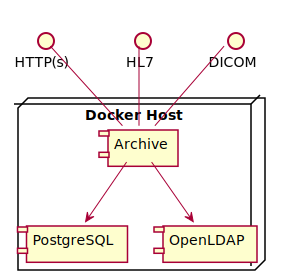
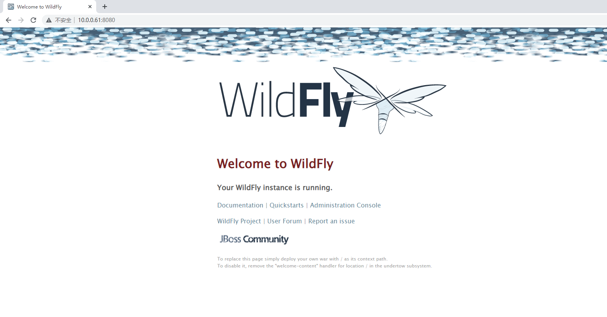

Deploy dcm4chee-arc-light on docker¶
dcm4che/dcm4chee-arc-light | Running on Docker
dcm4che/dcm4chee-arc-light is a DICOM Archive J2EE application. Let's deploy it on docker.
Note
Run minimum set of archive services on a single host

Use docker-compose¶
Create docker-compose.yml:
version: "3"
services:
ldap:
image: dcm4che/slapd-dcm4chee:2.6.0-26.0
logging:
driver: json-file
options:
max-size: "10m"
ports:
- "389:389"
env_file: docker-compose.env
volumes:
- /var/local/dcm4chee-arc/ldap:/var/lib/openldap/openldap-data
- /var/local/dcm4chee-arc/slapd.d:/etc/openldap/slapd.d
db:
image: dcm4che/postgres-dcm4chee:14.2-26
logging:
driver: json-file
options:
max-size: "10m"
ports:
- "5432:5432"
env_file: docker-compose.env
volumes:
- /etc/localtime:/etc/localtime:ro
- /etc/timezone:/etc/timezone:ro
- /var/local/dcm4chee-arc/db:/var/lib/postgresql/data
arc:
image: dcm4che/dcm4chee-arc-psql:5.26.0
logging:
driver: json-file
options:
max-size: "10m"
ports:
- "8080:8080"
- "8443:8443"
- "9990:9990"
- "9993:9993"
- "11112:11112"
- "2762:2762"
- "2575:2575"
- "12575:12575"
env_file: docker-compose.env
environment:
WILDFLY_CHOWN: /opt/wildfly/standalone /storage
WILDFLY_WAIT_FOR: ldap:389 db:5432
depends_on:
- ldap
- db
volumes:
- /etc/localtime:/etc/localtime:ro
- /etc/timezone:/etc/timezone:ro
- /var/local/dcm4chee-arc/wildfly:/opt/wildfly/standalone
- /var/local/dcm4chee-arc/storage:/storage
Create docker-compose.env:
STORAGE_DIR=/storage/fs1
POSTGRES_DB=pacsdb
POSTGRES_USER=pacs
POSTGRES_PASSWORD=pacs
Run the following command:
$ sudo docker-compose -p dcm4chee up -d

When everything okay, you can visit http://<docker-host>:8080/dcm4chee-arc/ui2, for me it is http://10.0.0.61:8080/dcm4chee-arc/ui2.
Web Service URLs¶
- Archive UI:
http://<docker-host>:8080/dcm4chee-arc/ui2- if secured, login with
| Name | Password | Role(s) |
|---|---|---|
root |
changeit |
userrootauditlogADMINISTRATORall roles specified by client realm-management |
admin |
changeit |
useradmin |
user |
changeit |
user |
- Wildfly Administration Console:
http://<docker-host>:9990, login with Username:root, Password:changeit. - DICOM QIDO-RS Base URL:
http://<docker-host>:8080/dcm4chee-arc/aets/DCM4CHEE/rs - DICOM STOW-RS Base URL:
http://<docker-host>:8080/dcm4chee-arc/aets/DCM4CHEE/rs - DICOM WADO-RS Base URL:
http://<docker-host>:8080/dcm4chee-arc/aets/DCM4CHEE/rs - DICOM WADO-URI:
http://<docker-host>:8080/dcm4chee-arc/aets/DCM4CHEE/wado - IHE XDS-I Retrieve Imaging Document Set:
http://<docker-host>:8080/dcm4chee-arc/xdsi/ImagingDocumentSource
Daily Operation¶
Deploy:
$ sudo docker-compose -p dcm4chee up -d
Stop:
$ sudo docker-compose -p dcm4chee stop
Start:
$ sudo docker-compose -p dcm4chee start
Stop and delete:
$ sudo docker-compose -p dcm4chee down
Probably Exceptions¶
Error response from daemon: driver failed programming external connectivity on endpoint dcm4chee-arc-1 (62ca0417c9a8b09df3a5108e83df6a10b19cf858f68770edaa5eadbbec113ea5): Error starting userland proxy: listen tcp4 0.0.0.0:9993: bind: address already in use
This because tcp4 9993 port is already in use, I used netstat -alnt | grep 9993 to find the reason, and finally found that I used Zerotier and it uses tcp4 9993.
Just delete the - "9993:9993" in docker-compose.yml. (The only thing affects is you cannot visit the Administration Console from another docker stack without reverse proxy)